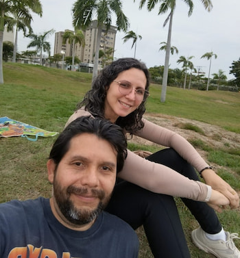

Home
About Me
My name is Ronald, the eldest of four siblings. I live in Maracaibo with my wife and my six-year-old son. I work as an analyst, collecting and analyzing local business data to support decision-making. I love listening to music, watching sci-fi movies and TV series, and learning about almost everything.
I started my programming journey during the COVID-19 pandemic by watching videos, reading tutorials, and taking free online courses. At the time, my main interest was Android app development, so I learned a great deal about Java and Kotlin.
Now, by studying Software Development at BYU-Idaho, God has given me the opportunity to formalize, strengthen, and expand the knowledge I have gained on my own. I hope to use these skills to better serve my family and my community.
At my current job, I am already applying many of the concepts I have learned in this program to build better tools for collecting, analyzing, and visualizing field data.
For example, in my CSE 111 and WDD 131 projects, I developed tools to help small entrepreneurs calculate their costs. This is one of the aspects of my job that I enjoy the most because it gives me the opportunity to help people.
I am truly excited about the future. There is still so much to learn, and I can't wait to see the amazing solutions we will be creating in the years ahead!
Student Photo

Web Certificate Courses
- WDD 130
- WDD 131
- WDD 231
The total credits for the courses listed above is